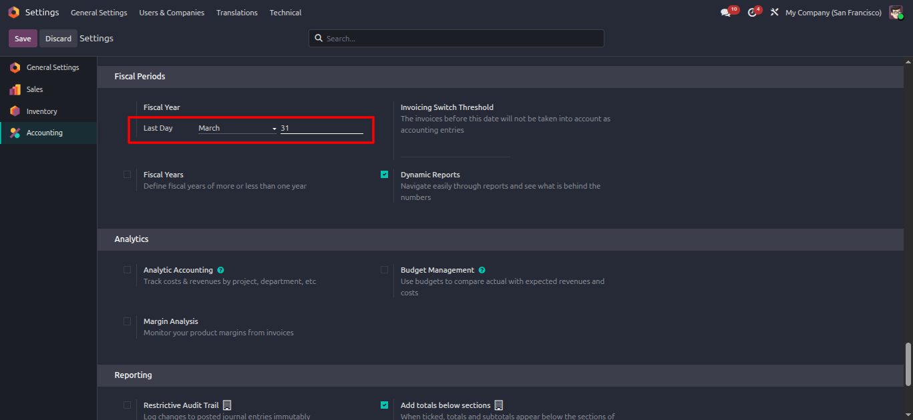
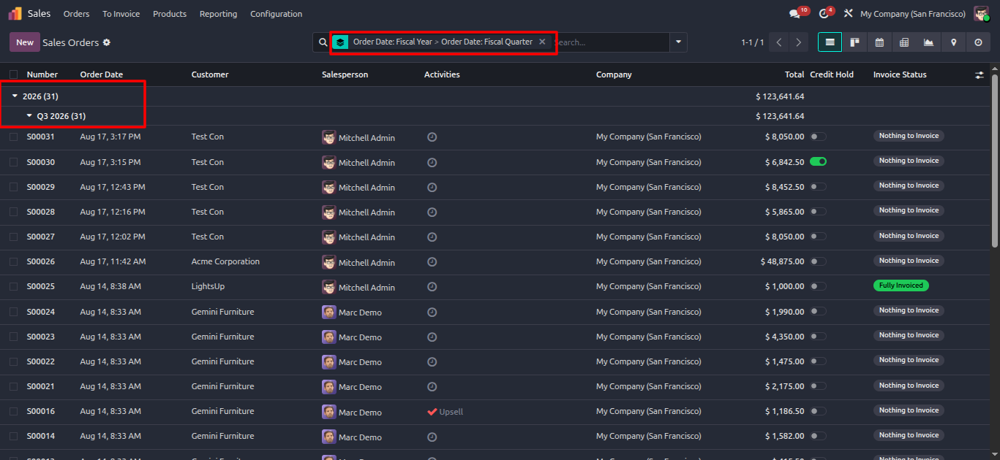
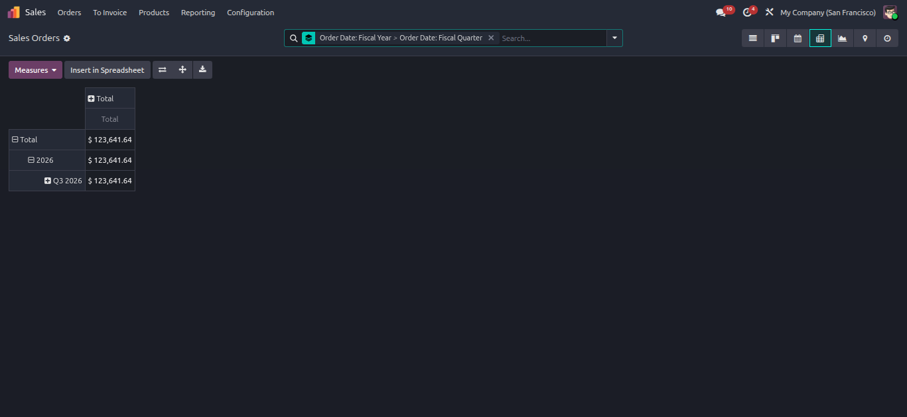
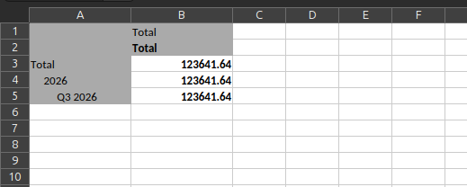

Customize Fiscal Year & Quarters
Incipient Financial SuiteMaster Corporate Fiscal Calendars in Odoo
Seamlessly filter sales orders, vendor bills, and financial reports by custom fiscal quarters (Q1, Q2, Q3, Q4) aligned dynamically to your company's official fiscal start date.
Need Setup Assistance?
Free pre-sales consultation and lifetime support for every installation.
Contact Technical SupportBuilt for Corporate Financial Control
Eliminate manual date calculations with dynamic quarter filtering
Dynamic Quarters
Q1, Q2, Q3, Q4 FiltersInstantly filter sales orders, vendor bills, and financial statements by custom fiscal quarters aligned to your company's start date.
Multi-Company
Isolated SchedulesConfigure unique fiscal start dates per operating entity (e.g. April 1st for UK/India, July 1st for Australia, Oct 1st for US).
Pivot & Graph
Native AggregationGroup list views, kanban cards, and pivot tables by Fiscal Quarter to generate executive summary reports and financial trend charts.
The Business Transformation
How Customize Fiscal Year & Quarters solves standard Odoo reporting gaps
Default Odoo Limitation
- ✕ Default search filters assume a standard Jan 1 - Dec 31 calendar year.
- ✕ Companies with non-standard fiscal schedules (e.g. Apr 1 - Mar 31) face inaccurate reporting.
- ✕ Accountants spend hours performing manual date math and Excel exports to calculate quarterly numbers.
Automated Fiscal Intelligence
- ✓ Search panel dynamically calculates Q1, Q2, Q3, and Q4 based on your official fiscal start month.
- ✓ Full multi-company support allows each operating entity to maintain its own unique fiscal start date.
- ✓ Native Group-By Quarter aggregation in list, kanban, pivot, and graph views with instant execution.
Comprehensive Feature Suite
12 Core capabilities engineered for precision financial reporting
Dynamic Search Filters
Filter any Odoo list, kanban, or pivot view by Q1, Q2, Q3, or Q4 according to your company's custom fiscal start month with a single click.
Multi-Company Isolation
Define unique fiscal start dates per company entity (e.g. April 1st for UK/India, July 1st for Australia) with complete security isolation.
Pivot & Graph Integration
Compare quarterly revenue, expenses, and profit margins year-over-year directly inside Odoo pivot tables and graphical charts.
Custom Fiscal Settings
Configure custom fiscal start month and day in standard accounting settings with automatic global propagation.
Aligned Data Exports
Export filtered quarterly data directly to Excel or PDF with accurate date range headers for external auditors.
High-Performance Queries
Optimized database domain expressions ensure lightning-fast search filter response times even on massive enterprise databases.
Sales & Purchase Integration
Extends fiscal quarter search and group-by filters to Sales Orders, Purchase Orders, and Stock Movements.
Automated Date Engine
Automatically adjusts leap years and varying month lengths to ensure exact day-level accuracy across fiscal years.
Accounting & Invoicing Native
Plugs directly into standard Customer Invoices, Vendor Bills, and Journal Items search views without overrides.
Multi-Currency Analysis
Calculates quarterly revenue and expense aggregates across foreign currency transactions seamlessly.
Edition Compatibility
100% compatible with Odoo Community Edition, Enterprise Edition, and Odoo.sh cloud deployments.
Zero External Code
Pure Odoo framework extension requiring zero external Python libraries or third-party servers.
Step-by-Step Visual Walkthrough
How Customize Fiscal Year & Quarters operates in Odoo
Fiscal Year Start Configuration
Configure your company's official fiscal year start month and day in Odoo Accounting settings.
Automatically aligns all Q1, Q2, Q3, and Q4 date ranges across your entire organization with full multi-company security isolation.

Dynamic Quarter Search Filtering
Filter any list, kanban, or financial view by Fiscal Quarter directly from the standard Odoo search panel.
Instantly isolate sales orders, vendor bills, and journal entries for Q1, Q2, Q3, or Q4 without manual date math.

Pivot & Graph View Group-By
Analyze revenue and expense distributions across quarters in Odoo Pivot & Graph views.
Group records by Fiscal Quarter to generate executive summary reports and financial trend charts.

Aligned Quarterly Data Exports
Export filtered quarterly data directly to Excel or PDF with accurate date range headers.
Maintains absolute alignment with your corporate fiscal calendar for seamless external auditing.

Frequently Asked Questions
Detailed answers to top 10 queries regarding installation, compatibility, and support